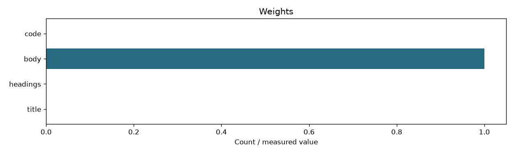
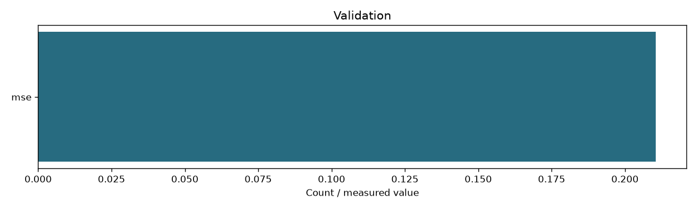

| zones | ['title', 'headings', 'body', 'code'] |
|---|---|
| weights | [0.0, 0.0, 1.0, 0.0] |
| index_fingerprint | 4217438d8fd32410fd22acf441c1c5403837c0fbb26a0f85edbdf1633eae0790 |
| training_csv_sha256 | e7bfe4179874a20cb35762d3acb723e9172f4dbc8f08da4293e590f5b85341fc |
| objective | training-only squared error to binary relevance; deterministic simplex grid step 0.05 |
| missing_zone_policy | renormalize over present zones; equal-present fallback when all present weights are zero |
| evaluation | {'train': {'mse': 0.15165827282834723, 'queries': 33}, 'validation': {'mse': 0.21046303331293797, 'queries': 11}} |
| judgment_scope | Small judged development pools, not final retrieval evaluation |

